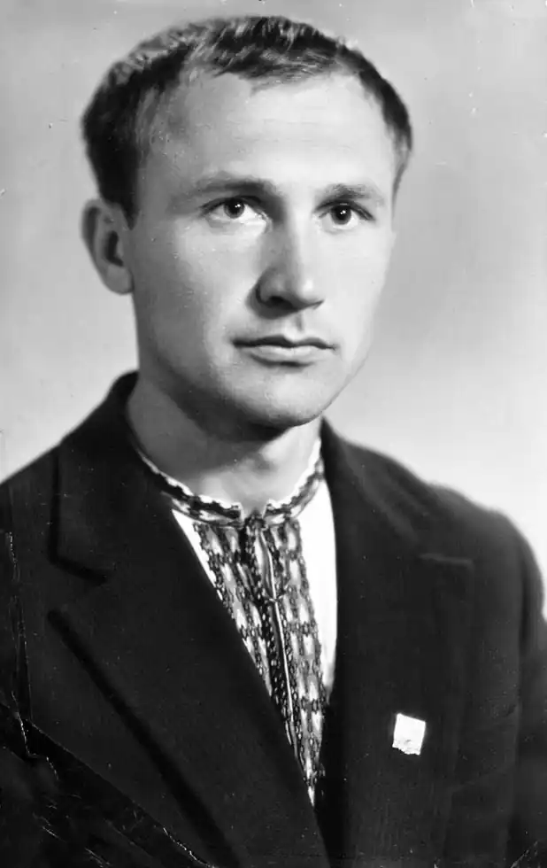
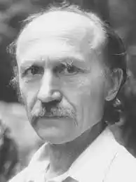
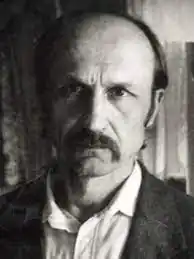

13 липня 1940 на хуторі Червоний Яр у Дніпропетровській області народився поет, дисидент, політв'язень, член Української Гельсінської групи Іван Сокульський.
Мама Івана була простою селянкою, 43 роки пропрацювала в колгоспі. Батька хлопець не пам'ятав – влітку сорок першого Григорій Сокульський добровольцем пішов на фронт і пропав безвісти в сорок четвертому.
Закінчив десятирічку в Синельниковому. Після першої невдалої спроби вступити до Дніпропетровського університету відробив два роки на підприємстві й поїхав на Львівщину, де ще два роки працював на шахті в Червонограді. У 1962-му вступив на філологічний факультет Львівського університету, став учасником Львівського клубу творчої молоді, де познайомився із творчістю поетів-шістдесятників. Серед яких були Василь Симоненко, Іван Драч, Микола Вінграновський, Ліна Костенко, Іван Дзюба, Євген Сверстюк, Іван Світличний, Алла Горська, Лесь Танюк, а пізніше – і з багатьма з них особисто. Скучивши за Дніпром та степами, у 1964-му перевівся до Дніпропетровського університету. Але вже за два роки його виключили з комсомолу та відрахували з університету "за поведєніє, не совместімоє со званиєм совєтського студєнта" (мовою КДБ так позначався націоналізм, який виявили у віршах поета). Іван Сокульський був одним із перших шістдесятників, які стали на захист української культури: у 1968-му він разом з Михайлом Скориком написав "Листа творчої молоді м. Дніпропетровська", де висловлювався протест проти кампанії цькування Олеся Гончара за роман "Собор" та проти політики зросійщення та цькування української інтелігенції. Після того, як "Лист" було зачитано на "Радіо "Свобода", під прес потрапив і сам Сокульський. У червні 1969-го його заарештували й засудили на 4,5 роки з відбуванням покарання в таборах суворого режиму. В ув'язненні потоваришував з дисидентами, серед яких були Микола Горбаль, Леонід Горохівський, Зиновій Красівський, Василь Овсієнко, Ярослав Лесів, Опанас Заливаха. Після звільнення зайнявся правозахисною діяльністю, вступив до Української Гельсінської групи, поширював самвидав. За це у 1980 році вдруге був арештований і отримав максимальний термін як особливо небезпечний державний злочинець: десять років позбавлення волі в таборах особливо суворого режиму і п'ять років заслання. 3 квітня 1985 року, за дев'ять днів до закінчення тюремного терміну, був утретє заарештований і засуджений до трьох років таборів за сфабрикованими звинуваченнями у "хуліганстві". Відбував ув'язнення в таборі особливо суворого режиму ВС-389/36-1 в Кучино. За непокору неодноразово потрапляв до штрафного ізолятору, рік провів в одиночній камері без права на передачі. У 1987 році зумів передати на волю свідчення про порушення прав людини та тортури, яким наглядачі піддають "політичних": з усіма фактами і прізвищами. Цей документ потрапив на Захід і справив там ефект бомби, адже на той час радянський лідер Михайло Горбачов заявив, що політв'язнів в СРСР немає. 2 серпня 1988-го звільнений з ув'язнення – після широкої міжнародної кампанії та естафетного голодування, яке оголосила дружина поета Орися Сокульська та дружина іншого політв'язня Ольга Стокотельна. Після звільнення став одним з провідних діячів українського національного відродження на Дніпропетровщині. Бере діяльну участь у створенні обласного товариства "Просвіта", Народного руху України, Української республіканської партії, Товариства "Меморіал" імені Василя Стуса. За його редакцією вийшло дев'ять номерів культурологічного журналу "Пороги". 20 травня 1990 року на пікетуванні на підтримку незалежності України його жорстоко побили аґенти КДБ. 22 червня 1992 року Іван Сокульський помер – далися взнаки і 13 років таборів та загострення хронічних хвороб. За іронією долі, довідку про повну реабілітацію сім'я отримала на 40-й день після його смерті.